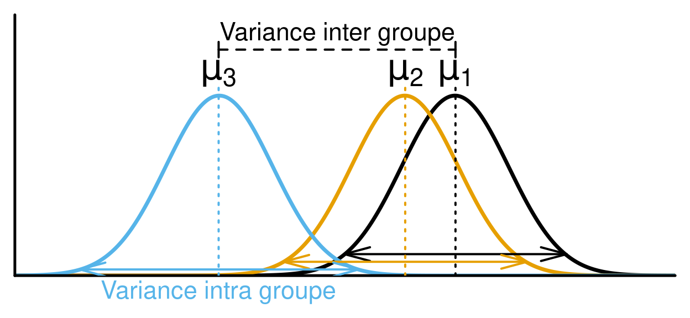
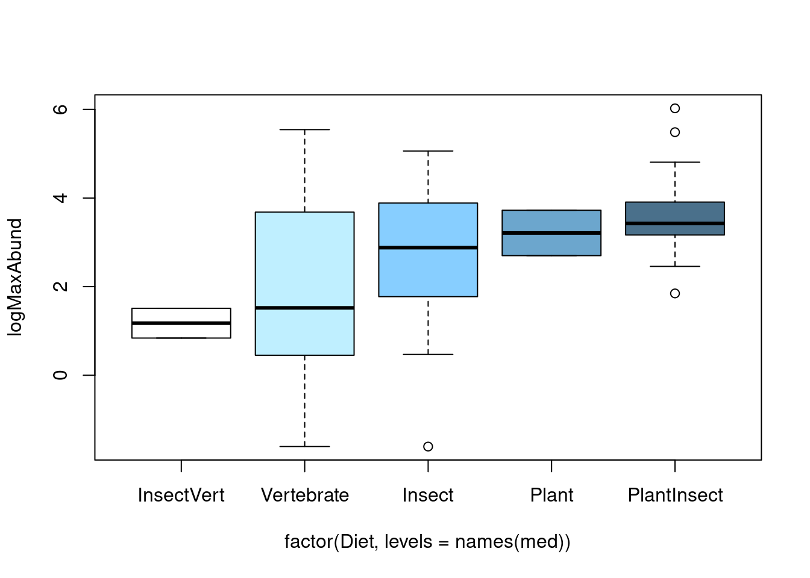
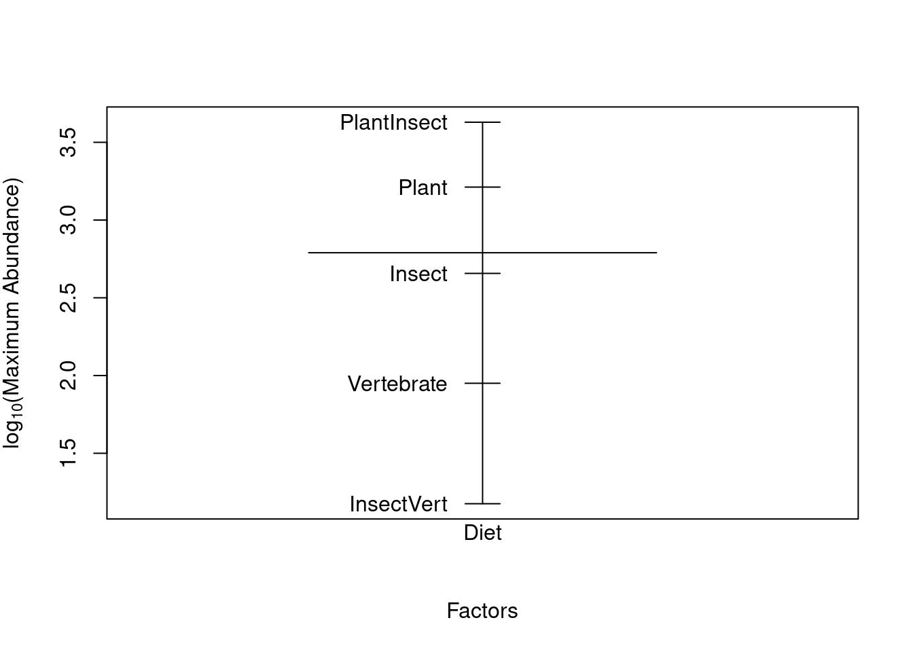
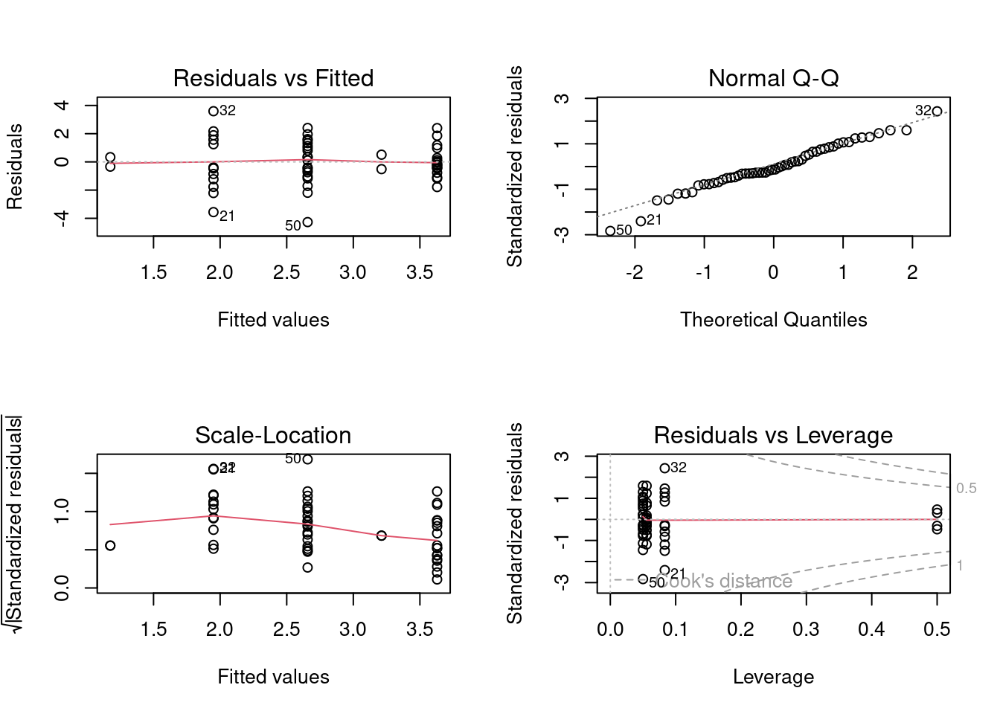
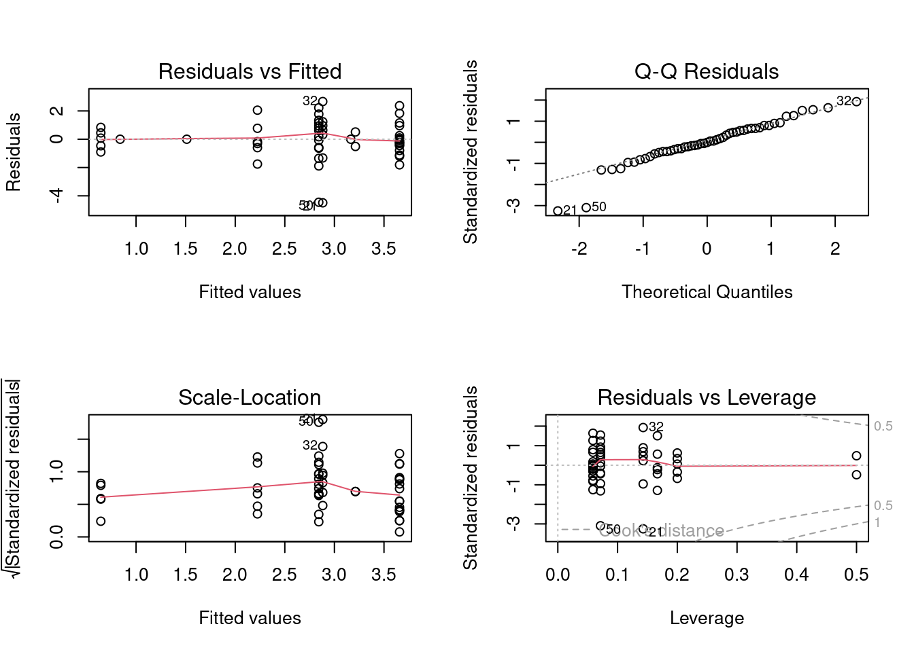
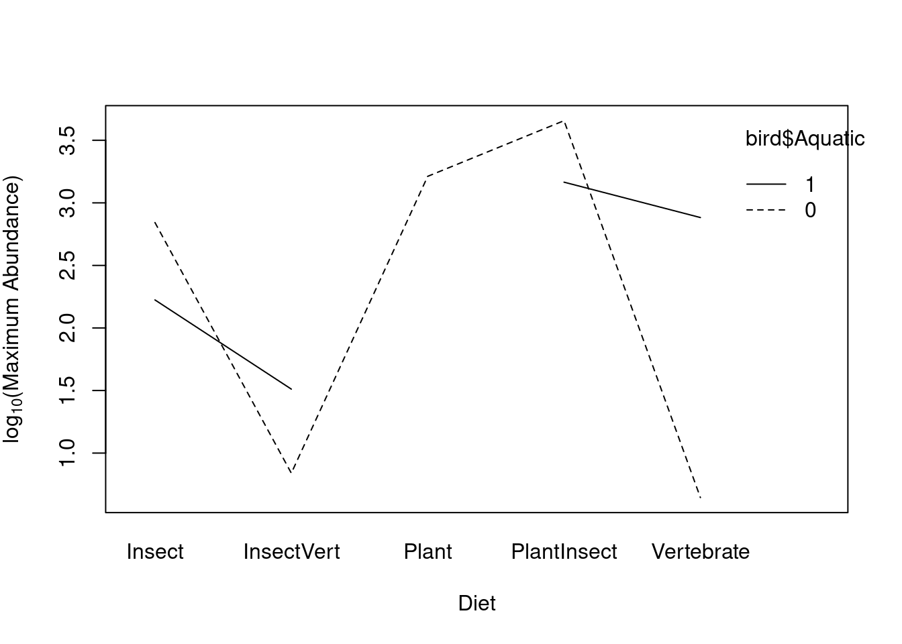
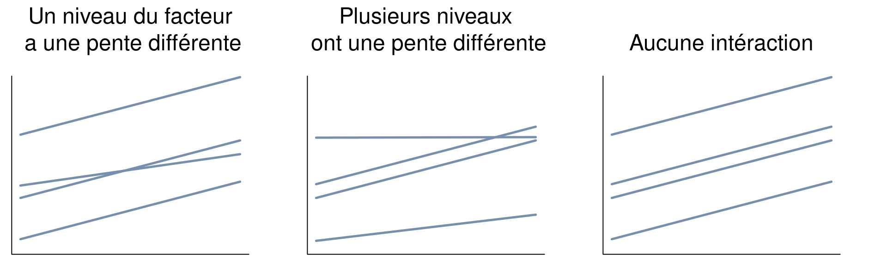
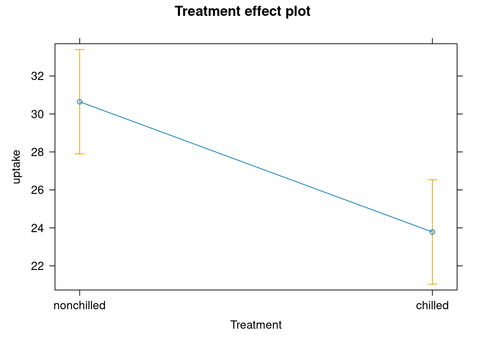

Chapitre 5 Test de t et ANOVA

5.1 ANOVA
L’analyse de la variance (ANOVA) est un type de modèle linéaire pour une variable réponse continue, et une ou plusieurs variables explicatives catégoriques. Les variables explicatives catégoriques peuvent comprendre plusieurs niveaux (ou groupes). Par exemple, une variable "couleur" peut avoir 3 niveaux: vert, bleu, et jaune. L’ANOVA teste si la moyenne de la variable réponse diffère entre ces niveaux ou groupes en comparant la variation intra-groupe et inter-groupe. Par exemple, si la masse des bleuets diffère selon leur couleur.
Le calcul de l’ANOVA se base sur la partition de la somme des carrés, et compare la variance entre les groupes à celle à l’intérieur des groupes (i.e. la variance intra-groupe). Si la variance entre les groupes est supérieure à la variance intra-groupe, la variable explicative a un effet plus important que l’erreur aléatoire (due à la variance intra-groupe). La variable explicative est donc susceptible d’influencer significativement la variable réponse.

Dans un ANOVA, la comparaison de la variance entre les groupes à celle intra-groupe se fait en calculant la statistique F. Cette statistique correspond au ratio entre la moyenne des carrés des groups (MSTrt) et la moyenne des carrés des erreurs (MS\(\epsilon\)). Ces deux termes sont obtenus en divisant leurs sommes des carrés respectives par leurs degrés de liberté, comme on le voit présenté typiquement dans un tableau d’ANOVA. Une valeur de p peut ensuite être calculée à partir de la statistique de F, qui suit une distribution de khi carré (χ2)
| Source de variation |
Degrés de liberté (df) |
Somme des carrés des écarts à la moyenne |
Moyenne des carrés | Statistique de F | |
|---|---|---|---|---|---|
| Total | \(ra-1\) | \(SS_{t}=\sum(y_{i}-\overline{y})^{2}\) | |||
| Facteur A | \(a-1\) | \(SS_{f}=\sum(\hat{y_{i}}-\overline{y})^{2}\) | \(MS_{f}=\frac{SS_{f}}{(a-1)}\) | \(F=\frac{MS_{f}} {MS_{E}}\) | |
| Résidus | \(a(r-1)\) | \(SS_{\epsilon}=\sum(y_{i}-\hat{y_{i}})^{2}\) | \(MS_{\epsilon}=\frac{SS_{\epsilon}}{a(r-1)}\) |
\(a\): nombre de niveaux de la variable explicative A
\(r\): nombre de répétitions par groupe
\(\overline{y}\): moyenne globale de la variable réponse
\(\hat{y_{i}}\) : moyenne de la variable réponse du groupe i.
5.1.1 Types d’ANOVA
- ANOVA à un critère de classification
Une variable explicative catégorique avec au moins 2 niveaux. S’il n’y a que 2 niveaux, un test de t peut être utilisé. - ANOVA à deux critères de classification section 4.1.3
- Deux variables explicatives catégoriques ou plus,
- Chaque facteur peut avoir plusieurs niveaux,
- Les interactions entre chaque variable explicative catégorique doivent être testées.
- Deux variables explicatives catégoriques ou plus,
- Mesures répétées
L’ANOVA peut être utilisée pour des mesures répétées, mais ce sujet n’est pas abordé dans cet atelier. Un modèle linéaire mixte peut également être utilisé pour ce type de données (voir l’atelier 6).
5.1.2 Test de t
Si on a une variable explicative est qualitative et n’a que 2 niveaux, on peut utiliser un test de t de Student pour déterminer s’il y a une différence entre la moyenne des 2 niveaux. Selon les données, on peut choisir de tester une hypothèse unilatérale: c’est-à-dire qu’on peut déterminer si la moyenne d’un groupe est plus grande que celle de l’autre groupe, plutôt que de seulement détecter une différence entre les moyennes du groupe.Noter que le test est plus robuste lorsque la taille de l’échantillon est plus élevée et lorsque les groupes ont des tailles égales.
Pour le test de t, la statistique t qui est utilisée pour déterminer la
valeur de p est calculée de la manière suivante :
\(t = (\overline{y_{1}}-\overline{y_{1}})/\sqrt{\frac{s_{1}^2} n_{1} + \frac{s_{2}^2} n_{2}}\)
où
\(\overline{y_{1}}\) and \(\overline{y_{2}}\) sont les moyennes
de la variable réponse y pour les groupes 1 et 2 respectivement,
\(s_{1}^2\) et \(s_{2}^2\) sont les variances de la variable réponse y pour les
groupes 1 et 2 respectivement,
\(n_{1}\) et \(n_{2}\) sont les tailles d’échantillons des groupes 1 et 2
respectivement.
Notez que le test de t est mathématiquement équivalent à une ANOVA à un
critère de classification ayant deux niveaux.
5.1.2.1 Conditions de base
Si les conditions de base du test de t ne sont pas respectées, les résultats du test peuvent être erronés. Voici quelques notes à propos de la validation de ces conditions de base:
- Normalité des données
Comme pour la régression linéaire simple, la variable réponse doit être distribuée normalement. Si cette condition n’est pas respectée, mais que la distribution est relativement symétrique, que la moyenne est près du centre de la distribution, et que la distribution est unimodale, le test de t donnera un résultat valable en autant que la taille de l’échantillon soit suffisante (règle empirique : ~30 observations). Si les données sont fortement asymétriques, il est nécessaire d’avoir un très large échantillon pour que le test fonctionne. Dans ce cas-là, il est préférable d’utiliser un test non-paramétrique. - Homoscédasticité
Une autre supposition importante du test de t est que les variances des deux groupes sont égales. Ceci permet de calculer une variance combinée qui est utilisée pour calculer l’erreur type de la différence des moyennes. Si les variances des deux groupes sont inégales, la probabilité de commettre une erreur de type I (i.e. rejeter l’hypothèse nulle alors qu’elle est vraie) est supérieure au seuil α.
La robustesse du test de t augmente avec la taille de l’échantillon et est supérieure lorsque les groupes sont de même taille.
Il est possible d’évaluer la différence de variance entre deux échantillons en se demandant quelle est la probabilité de tirer deux échantillons d’une population avec des variances identiques alors que les échantillons ont des variances de \(s_{1}^2\) et \(s_{2}^2\).
Pour ce faire, il faut effectuer un test de ratio des variances (i.e. un test de F).
5.1.2.2 Non-respect des conditions d’application
Si les variances entre les groupes ne sont pas égales, il est possible de corriger la situation avec la correction de Welch. Si les conditions de base ne sont toujours pas respectées, il est possible de transformer les données (avec un log ou une racine carré par exemple) ou utiliser l’équivalent non-paramétrique du test de t : le test de Mann-Whitney. Finalement, si les deux groupes ne sont pas indépendants (e.g. mesures prises sur un même individu à deux périodes différentes), il faut utiliser un test de t apparié.
5.1.2.3 Effectuer un test de t
Dans R, le test de t est exécutés avec la fonction t.test.
t.test(Y ~ X2, data = data, alternative = "two.sided")où:
-Y est la variable réponse
-X2 est la variable quantitative à deux niveaux
-data est le nom du jeux de données
-alternative réfère à l’hypothèse alternative. 'two.sided' est le paramètre par défault. Vous pouvez aussi choisir 'less' ou 'greater'. Pour plus de détails, voir la section suivante.
-var.eqal, if true, this increases the robustness of the test. But we need to test for it prior to testing.
Regardons un exemple avec des données de régime alimentaire sur des oiseaux
Par exemple, nous pouvons tester la différence de masse entre les oiseaux aquatiques et les oiseaux terrestres avec la variable Aquatic.
Commençons par visualizer les données:

Il semble avoir une différence simplement en regardant le graphique.
Il faut maintenant tester les conditions d’application pour s’assurer que le test sera valide.
Note: Nous n’avons pas besoin de tester la normalité puisque nous avons transfomé en log plus tôt.
# Homogénéité de la variance
var.test(logMass ~ Aquatic, data = bird)##
## F test to compare two variances
##
## data: logMass by Aquatic
## F = 1.0725, num df = 38, denom df = 14, p-value = 0.9305
## alternative hypothesis: true ratio of variances is not equal to 1
## 95 percent confidence interval:
## 0.3996428 2.3941032
## sample estimates:
## ratio of variances
## 1.072452Ici, on voit que le test de ratio des variances n’est pas statistiquement différent de 1, ce qui signifie que les variances entre les groupes sont égales.
ttest1 <- t.test(x = bird$logMass[bird$Aquatic == 0], y = bird$logMass[bird$Aquatic ==
1], var.equal = TRUE)
# ou l'équivalent
ttest1 <- t.test(logMass ~ Aquatic, var.equal = TRUE, data = bird)
ttest1##
## Two Sample t-test
##
## data: logMass by Aquatic
## t = -7.7707, df = 52, p-value = 2.936e-10
## alternative hypothesis: true difference in means between group 0 and group 1 is not equal to 0
## 95 percent confidence interval:
## -3.838340 -2.262829
## sample estimates:
## mean in group 0 mean in group 1
## 3.645998 6.696582Étant donné que notre valeur de p est inférieure à 0.05, l’hypothèse nulle (i.e. l’absence de différence de masse entre les deux groupes) est rejetée.
5.1.2.4 Effectuer un test de t avec lm()
Le test de t est un modèle linéaire et un cas spécifique de l’ANOVA avec un facteur à 2 niveaux. Vous pouvez donc arriver aux mêmes résultats avec:
lm.t <- lm(logMass ~ Aquatic, data = bird)
anova(lm.t)## Analysis of Variance Table
##
## Response: logMass
## Df Sum Sq Mean Sq F value Pr(>F)
## Aquatic 1 100.816 100.82 60.385 2.936e-10 ***
## Residuals 52 86.817 1.67
## ---
## Signif. codes: 0 '***' 0.001 '**' 0.01 '*' 0.05 '.' 0.1 ' ' 1Quand les variances sont équivalents, on peut montrer que t2 = F:
ttest1$statistic^2## t
## 60.3845anova(lm.t)$F## [1] 60.3845 NA5.1.2.5 Test de t unilatéral
L’argument "alternative" de la fonction t.test() permet
d’effectuer un test de t unilatéral, c’est-à-dire dans une seule direction. Par défault, la fonction t.test() utilise 'two-sided', qui permet seulement de tester si les moyennes diffère l’une de l’autre. Si l’on cherche à déterminer si une moyenne est plus élevée que l’autre, nous pouvons utiliser 'less' (\(\overline{y_{1}}\) < \(\overline{y_{2}}\)) ou 'greater' (\(\overline{y_{1}}\) > \(\overline{y_{2}}\)). Par exemple, si on veut tester l’hypothèse que les oiseaux terrestres sont plus légers que les oiseaux aquatiques, on peut écrire la commande de la façon suivante :
# Test de t en spécifiant l'argument 'alternative'
uni.ttest1 <- t.test(logMass ~ Aquatic, var.equal = TRUE, data = bird,
alternative = "less")
uni.ttest1Dans la sortie R obtenue par uni.ttest1, les résultats du test sont
indiqués à la troisième ligne :
##
## Two Sample t-test
##
## data: logMass by Aquatic
## t = -7.7707, df = 52, p-value = 1.468e-10
## alternative hypothesis: true difference in means between group 0 and group 1 is less than 0
## 95 percent confidence interval:
## -Inf -2.393147
## sample estimates:
## mean in group 0 mean in group 1
## 3.645998 6.696582Dans ce cas-ci, la statistique du test de t est t = -7.7707 avec df = 52 degrés de liberté, ce qui donne une valeur de p = 1.468e-10. On rejette donc l’hypothèse nulle. On peut conclure que les oiseaux aquatiques sont significativement plus lourds que les oiseaux terrestres.
Nous aurions pu tester l’invers: si les oiseaux terrestres sont plus lourds que les oiseaux aquatique. Dece test, nous obtenons une même valeur de t (mais négative) et une valeur de p qui reflète ces résultats. Nous pouvons en conclure que les oiseaux terrestres ne sont pas significativement plus lourds que les oiseaux aquatiques.
# Test de t en spécifiant l'argument 'alternative'
uni.ttest1 <- t.test(logMass ~ Aquatic, var.equal = TRUE, data = bird,
alternative = "greater")
uni.ttest1##
## Two Sample t-test
##
## data: logMass by Aquatic
## t = -7.7707, df = 52, p-value = 1
## alternative hypothesis: true difference in means between group 0 and group 1 is greater than 0
## 95 percent confidence interval:
## -3.708022 Inf
## sample estimates:
## mean in group 0 mean in group 1
## 3.645998 6.6965825.1.3 Effectuer une ANOVA
Le test de t s’applique seulement quand on a une seule variable explicative catégorique, qui comprend 2 niveaux. Pour tous les autres modèles linéaires avec des variables explicatives catégoriques avec > 2 niveaux, on utilise une ANOVA.
Lorsque l’ANOVA détecte une différence significative entre les groupes, l’analyse n’indique pas quel(s) groupe(s) diffère(nt) de(s) l’autre(s). Un test couramment utilisé a posteriori pour répondre à cette question est le test de Tukey. Vous voudrez peut-être comparer vos groupes avec des comparaison planifiées ou contrastes. Ceci est souvent plus robust et élégant puisque les différences attendues sont établies a priori.
5.1.4 Vérification des conditions d’application
Comme la régression linéaire simple et le test de t, l’ANOVA doit respecter 4 conditions statistiques pour que les résultats soient valides. Voici quelques conseils pour tester ces conditions pour une ANOVA:
- Distribution normale
Les résidus d’un modèle d’ANOVA peuvent être visualisés à l’aide d’un diagramme quantile-quantile (Q-Q). Les résidus sont considérés comme normalement distribués s’ils se répartissent le long de la droite 1:1. Si ce n’est pas le cas, les résultats de l’ANOVA ne peuvent pas être interprétés. - Homoscédasticité
L’ANOVA est valide seulement lorsque la variance des résidus est homogène entre les groupes. Cette homoscédasticité peut être vérifiée par un graphique des résidus en fonction des valeurs prédites ou par un diagramme diagnostic "scale-location". Si ces graphiques montrent une dispersion équivalente des résidus pour chaque valeur prédite, la variance des résidus peut être considérée homogène.
Il est également possible d’effectuer un test de Bartlett à l’aide de la fonctionbartlett.test(). Si la valeur de p de ce test est supérieure à 0.05, l’hypothèse nulle H0: s12 = s22 =... = sj2 =... = sn2 est acceptée (i.e. l’homoscédasticité est respectée).
Une transformation de la variable réponse peut être utilisée si cette supposition n’est pas respectée. - Additivité
Les effets de deux facteurs sont additifs si l’effet d’un facteur demeure constant pour tous les niveaux d’un autre facteur. Chaque facteur doit influencer la variable réponse de manière indépendante des autres facteurs.
Si les conditions ne sont pas respectées, vous pouvez essayer de transformer la variable réponse. Ceci peut aider à normaliser les résidus, à égaliser les variances, et à transformer un effet multiplicatif en effet additif. Si vous ne voulez pas (ou ne pouvez pas) transformer vos données, vous pouvez utiliser l’équivalent non-paramétrique de l’ANOVA : le test de Kruskal-Wallis.
5.1.5 Exemple avec le jeu de données bird
Commençons tout d’abord par visualiser les données avec la fonction
boxplot(). Rappelez-vous que, dans R, les groupes sont ordonnés par
ordre alphabétique par défaut. Il est possible de réorganiser les
groupes autrement. Par exemple, on peut les ordonner par ordre croissant
de la médiane de chaque diète.
# Ordre alphabétique par défaut
boxplot(logMaxAbund ~ Diet, data = bird)# Réorganiser l'ordre des facteurs
med <- sort(tapply(bird$logMaxAbund, bird$Diet, median))
boxplot(logMaxAbund ~ factor(Diet, levels = names(med)), data = bird,
col = c("white", "lightblue1", "skyblue1", "skyblue3", "skyblue4"))
Une autre façon de visualiser les effets des facteurs est d’utiliser la fonction plot.design(). Cette fonction permet de représenter les valeurs moyennes des niveaux d’un facteur (par une ligne verticale) et
la moyenne globale de la variable réponse (par une ligne horizontale).
plot.design(logMaxAbund ~ Diet, data = bird, ylab = expression("log"[10] *
"(Maximum Abundance)"))
Par la suite, nous devons vérifier les conditions d’applications. Note: nous devons performer l’ANOVA poour pouvoir utiliser les résidus, cependant, tant que nous ne vérifions pas les conditions d’application, les résultats ne peuvent être interprétés.
# Graphiques pour conditions d'application
aov1 <- aov(logMaxAbund ~ Diet, data = bird)
opar <- par(mfrow = c(2, 2))
plot(aov1)
par(opar) Idéalement, le premier graphique devrait montrer une dispersion similaire pour chaque niveau de diète. Nous pouvons utiliser tous ces graphiques pour évaluer les conditions d’application, mais nous pouvons aussi utiliser les test de Shapiro, de Bartlett ou de Levene en supplément. Note:Le test de Levene performe mieux, mais a une erreur de Type II un peu plus élevée.
# Test de la supposition de la normalité des résidus
shapiro.test(resid(aov1))##
## Shapiro-Wilk normality test
##
## data: resid(aov1)
## W = 0.97995, p-value = 0.4982# Test de la supposition de l'homogénéité de la variance
# Bartlett
bartlett.test(logMaxAbund ~ Diet, data = bird)##
## Bartlett test of homogeneity of variances
##
## data: logMaxAbund by Diet
## Bartlett's K-squared = 7.4728, df = 4, p-value = 0.1129# Levene
library(car)
leveneTest(logMaxAbund ~ Diet, data = bird)## Levene's Test for Homogeneity of Variance (center = median)
## Df F value Pr(>F)
## group 4 2.3493 0.06717 .
## 49
## ---
## Signif. codes: 0 '***' 0.001 '**' 0.01 '*' 0.05 '.' 0.1 ' ' 1Toutefois, les tests ne sont pas significatifs. On peut supposer que les résidus sont distribués normalement et que les variances sont égales.
Nous sommes maintenant prêts à effectuer une ANOVA. Dans R, la fonction
aov() permet d’effectuer une ANOVA directement. Il est également
possible d’effectuer une ANOVA avec la fonction anova() qui exécute
l’ANOVA comme un modèle linéaire :
# En utilisant aov()
aov1 <- aov(logMaxAbund ~ Diet, data = bird)
summary(aov1)
# En utilisant lm()
anov1 <- lm(logMaxAbund ~ Diet, data = bird)
anova(anov1)5.1.6 Sortie du modèle
Lorsque le modèle d’ANOVA a été validé et les conditions d’applications rencontrées, on peut interpréter les résultats correctement. La sortie du modèle fournie par R dépend de la
fonction qui a été utilisée pour effectuer l’ANOVA. Si la fonction
aov() a été utilisée :
aov1 <- aov(logMaxAbund ~ Diet, data = bird)Les résultats de l’ANOVA peuvent être visualisés avec la fonction
summary() :
summary(aov1)Si la fonction lm() a été utilisée :
anov1 <- lm(logMaxAbund ~ Diet, data = bird)les résultats de l’ANOVA peuvent être visualisés avec la fonction
anova() :
anova(anov1)Dans les deux cas, la sortie dans R sera la même :
## Df Sum Sq Mean Sq F value Pr(>F)
## Diet 4 27.07 6.768 2.836 0.0341 *
## Residuals 49 116.92 2.386
## ---
## Signif. codes: 0 '***' 0.001 '**' 0.01 '*' 0.05 '.' 0.1 ' ' 1Cette sortie de R représente le tableau de l’ANOVA. On y retrouve les degrés de liberté, la somme des carrés, la moyenne de la somme des carrés, la statistique de F ainsi qu’une valeur de p. Dans l’exemple de la diète des oiseaux, la diète influence significativement l’abondance des oiseaux car la valeur de p est inférieure à 0.05. L’hypothèse nulle est rejetée, ce qui signifie qu’au moins une des diètes influence l’abondance différemment des autres diètes.
5.1.7 Tests complémentaires
Il est impossible d’identifier quel groupe diffère des autres avec
une ANOVA. Elle ne permet que de déterminer s’il existe une différence
entre niveaux. Pour identifier les niveaux qui diffèrent des autres, les
tests post-hoc comparent les combinaisons de variables explicatives
(i.e. les groupes) deux par deux. Il existe plusieurs tests post hoc
(e.g. Fischer’s least significant difference, Duncan’s new multiple
range test, Newman-Keuls method, Dunnett’s test, etc.), mais le test de
Tukey est le plus couramment utilisé. Dans R, on utilise la fonction
TukeyHSD() pour effectuer ce test :
# À quel niveau se situe la différence de diète ?
TukeyHSD(aov(anov1), ordered = T)
# Cette commande est équivalente à la précédente :
TukeyHSD(aov1, ordered = T)La sortie de R inclut un tableau qui liste toutes les combinaisons des
niveaux de la variable explicative et qui identifie quel(s)
groupe(s) diffère(ent) des autres :
## Tukey multiple comparisons of means
## 95% family-wise confidence level
## factor levels have been ordered
##
## Fit: aov(formula = logMaxAbund ~ Diet, data = bird)
##
## $Diet
## diff lwr upr p adj
## Vertebrate-InsectVert 0.7746576 -2.56640638 4.115722 0.9645742
## Insect-InsectVert 1.4815601 -1.76264078 4.725761 0.6965047
## Plant-InsectVert 2.0364840 -2.33799553 6.410964 0.6812494
## PlantInsect-InsectVert 2.4539424 -0.80660217 5.714487 0.2235587
## Insect-Vertebrate 0.7069025 -0.89043156 2.304237 0.7204249
## Plant-Vertebrate 1.2618265 -2.07923748 4.602890 0.8211024
## PlantInsect-Vertebrate 1.6792848 0.04901254 3.309557 0.0405485
## Plant-Insect 0.5549239 -2.68927692 3.799125 0.9884504
## PlantInsect-Insect 0.9723823 -0.44885612 2.393621 0.3117612
## PlantInsect-Plant 0.4174584 -2.84308619 3.678003 0.9961844Dans ce cas-ci, la seule différence significative d’abondance se retrouve entre les diètes "PlantInsect" et "Vertebrate".
5.1.8 Visualisation des résultats
Après avoir vérifié les conditions de base, interprété les résultats, et
identifié les niveaux significatifs à l’aide de tests post-hoc ou de
contrastes, les résultats d’une ANOVA peuvent être représentés
graphiquement à l’aide de la fonction barplot(). R produit donc un
graphique de la variable réponse en fonction des niveaux de groupe,
ou les erreurs types et le nom des niveaux du groupe (représentant
le résultat d’un test post hoc) peuvent y être apposées.
# Visualisation d'un modèle d'ANOVA à l'aide de la fonction
# barplot()
sd <- tapply(bird$logMaxAbund, list(bird$Diet), sd)
means <- tapply(bird$logMaxAbund, list(bird$Diet), mean)
n <- length(bird$logMaxAbund)
se <- 1.96 * sd/sqrt(n)
bp <- barplot(means, col = c("white", "lightblue1", "skyblue1",
"skyblue3", "skyblue4"), ylab = expression("log"[10] * "(Maximum Abundance)"),
xlab = "Diet", ylim = c(0, 5))
# Ajout des lignes verticales représentant les erreurs
# types
segments(bp, means - se, bp, means + se, lwd = 2)
# et des lignes horizontales
segments(bp - 0.1, means - se, bp + 0.1, means - se, lwd = 2)
segments(bp - 0.1, means + se, bp + 0.1, means + se, lwd = 2)
# ajout d'une ligne à 0
abline(h = 0)
5.1.9 Allons plus loin: Contrastes
Les constrastes servent à comparer chaque niveau du facteur à un niveau de référence, et de détecter des différences significatives entre chaque niveau.
Les contrastes sont dbasées sur des hypothèses a priori, ce qui les rend beaucoup plus robustes que les test a posteriori comme le test de Tukey. Avec les contrastes, les groupes peuvent être composés d’un ou plusieurs niveaux d’un facteur et on peut tester une hypothèse simple (e.g. μ1 = μ2) ou des hypothèses plus complexes (e.g. (μ1 + μ2)/3 == μ3).
Important Le nombre de comparaisons doit être plus petit ou égal au nombre de degrés de liberté de l’ANOVA. Ces comparaisons doivent être indépendantes l’une de l’autre.
Pour une ANOVA où la variable prédictrice est catégorique, l’estimation de l’ordonnée à l’origine est le niveau de référence et correspond à la moyenne du premier niveau (en ordre alphabétique) du facteur.En calculant l’ordonnée à l’origine de référence et l’ordonnée à l’origine de chaque niveau de Diet, que remarquez-vous?
tapply(bird$logMaxAbund, bird$Diet, mean)## Insect InsectVert Plant PlantInsect Vertebrate
## 2.656938 1.175378 3.211862 3.629321 1.950036coef(anov1)## (Intercept) DietInsectVert DietPlant DietPlantInsect DietVertebrate
## 2.6569384 -1.4815601 0.5549239 0.9723823 -0.7069025coef(anov1)[1] + coef(anov1)[2] # InsectVert## (Intercept)
## 1.175378coef(anov1)[1] + coef(anov1)[3] # Plant## (Intercept)
## 3.211862La moyenne de la variable Insect correspond à l’ordonnée à l’origine de notre de notre ANOVA anov1.
Il est aussi possible d’afficher ces résultats supplémentaires de l’ANOVA
dans R avec la fonction summmary.lm(). Cette sortie
montre les résultats de la régression linéaire pour chaque niveau de la
variable catégorique.
Note: On peut afficher ces résultats avec la fonction summmary.lm() lorsque l’ANOVA a été effectuée avec la fonction aov() et avec la fonction summary()
lorsque l’ANOVA a été effectuée avec la fonction lm().
##
## Call:
## lm(formula = logMaxAbund ~ Diet, data = bird)
##
## Residuals:
## Min 1Q Median 3Q Max
## -4.2664 -0.7592 -0.2028 1.0908 3.5938
##
## Coefficients:
## Estimate Std. Error t value Pr(>|t|)
## (Intercept) 2.6569 0.3454 7.692 5.66e-10 ***
## DietInsectVert -1.4816 1.1456 -1.293 0.2020
## DietPlant 0.5549 1.1456 0.484 0.6303
## DietPlantInsect 0.9724 0.5019 1.938 0.0585 .
## DietVertebrate -0.7069 0.5640 -1.253 0.2161
## ---
## Signif. codes: 0 '***' 0.001 '**' 0.01 '*' 0.05 '.' 0.1 ' ' 1
##
## Residual standard error: 1.545 on 49 degrees of freedom
## Multiple R-squared: 0.188, Adjusted R-squared: 0.1217
## F-statistic: 2.836 on 4 and 49 DF, p-value: 0.0341La dernière ligne de cette sortie est identique à la sortie précédente
de l’ANOVA. La statistique de F de l’ANOVA et sa valeur de p associée
(2.836 et 0.0341 respectivement) sont les mêmes que celles présentées
dans la table d’ANOVA, ce qui indique que la variabilité de
l’abondance est mieux expliquée par la diète que par un modèle nul; la
diète a donc un effet significatif sur l’abondance. L’ajustement du
modèle (i.e. le R2 ajusté) apparaît sur l’avant-dernière ligne de la
sortie. Dans ce cas-ci, la diète explique 12.17% de la variabilité de
l’abondance.
Les contrastes sont utilisés pour ajuster une variable réponse en
fonction des différents niveaux d’une variable catégorique. Dans le cas
de l’abondance en fonction de la diète, cinq régressions linéaires
(correspondant aux cinq coefficients dans la sortie de R) sont calculées
par la fonction lm(), car la variable Diet contient cinq niveaux.
Par défaut, le niveau de référence correspond au premier niveau (en
ordre alphabétique) de la variable catégorique. Ce niveau est indiqué
par la ligne intercept dans la sortie de R, soit Insect dans ce
cas-ci.
Ici, le coefficient estimé du niveau de référence est comparé à 0 par un
test de t, alors que les autres coefficients sont comparés à celui du
niveau de référence. Dans ce cas-ci, seule la diète PlantInsect est
différente de la diète Insect (valeur de p = 0.0585).
En d’autres mots, cette sortie de R permet de calculer la moyenne de la
variable réponse pour chaque niveau de diète. Par exemple :
LogMaxAbund = 1.1539 pour la diète Insect,
LogMaxAbund = 1.1539 – 0.6434 pour la diète InsectVert,
LogMaxAbund = 1.1539 + 0.2410 pour la diète Plant,
etc.
Ce type de contrastes compare chaque niveau de la variable explicative à
un niveau de référence. Dans R, ceci correspond à la fonction
contr.treatment() et représentent la méthode par défaut de la fonction
lm().
Le niveau de référence peut être changé en utilisant la fonction
relevel(). Par exemple,les lignes suivantes comparent chaque diète à la diète Plant maintenant définie comme le niveau de référence.
bird$Diet2 <- relevel(bird$Diet, ref = "Plant")
anov2 <- lm(logMaxAbund ~ Diet2, data = bird)
summary(anov2)##
## Call:
## lm(formula = logMaxAbund ~ Diet2, data = bird)
##
## Residuals:
## Min 1Q Median 3Q Max
## -4.2664 -0.7592 -0.2028 1.0908 3.5938
##
## Coefficients:
## Estimate Std. Error t value Pr(>|t|)
## (Intercept) 3.2119 1.0923 2.941 0.00499 **
## Diet2Insect -0.5549 1.1456 -0.484 0.63026
## Diet2InsectVert -2.0365 1.5447 -1.318 0.19351
## Diet2PlantInsect 0.4175 1.1513 0.363 0.71848
## Diet2Vertebrate -1.2618 1.1798 -1.070 0.29006
## ---
## Signif. codes: 0 '***' 0.001 '**' 0.01 '*' 0.05 '.' 0.1 ' ' 1
##
## Residual standard error: 1.545 on 49 degrees of freedom
## Multiple R-squared: 0.188, Adjusted R-squared: 0.1217
## F-statistic: 2.836 on 4 and 49 DF, p-value: 0.0341anova(anov2)## Analysis of Variance Table
##
## Response: logMaxAbund
## Df Sum Sq Mean Sq F value Pr(>F)
## Diet2 4 27.071 6.7677 2.8363 0.0341 *
## Residuals 49 116.918 2.3861
## ---
## Signif. codes: 0 '***' 0.001 '**' 0.01 '*' 0.05 '.' 0.1 ' ' 1Il est aussi possible de réordonné les niveaux selon leur médiane, plutôt que par ordre alphabétique:
med <- sort(tapply(bird$logMaxAbund, bird$Diet, median))
bird$Diet2 <- factor(bird$Diet, levels = names(med))
anov2 <- lm(logMaxAbund ~ Diet2, data = bird)
summary(anov2)##
## Call:
## lm(formula = logMaxAbund ~ Diet2, data = bird)
##
## Residuals:
## Min 1Q Median 3Q Max
## -4.2664 -0.7592 -0.2028 1.0908 3.5938
##
## Coefficients:
## Estimate Std. Error t value Pr(>|t|)
## (Intercept) 1.1754 1.0923 1.076 0.2872
## Diet2Vertebrate 0.7747 1.1798 0.657 0.5145
## Diet2Insect 1.4816 1.1456 1.293 0.2020
## Diet2Plant 2.0365 1.5447 1.318 0.1935
## Diet2PlantInsect 2.4539 1.1513 2.131 0.0381 *
## ---
## Signif. codes: 0 '***' 0.001 '**' 0.01 '*' 0.05 '.' 0.1 ' ' 1
##
## Residual standard error: 1.545 on 49 degrees of freedom
## Multiple R-squared: 0.188, Adjusted R-squared: 0.1217
## F-statistic: 2.836 on 4 and 49 DF, p-value: 0.0341anova(anov2)## Analysis of Variance Table
##
## Response: logMaxAbund
## Df Sum Sq Mean Sq F value Pr(>F)
## Diet2 4 27.071 6.7677 2.8363 0.0341 *
## Residuals 49 116.918 2.3861
## ---
## Signif. codes: 0 '***' 0.001 '**' 0.01 '*' 0.05 '.' 0.1 ' ' 1La matrice de coefficients de contrastes peut être affichée par la commande suivante :
bird$Diet2 <- relevel(bird$Diet, ref = "Plant")
contrasts(bird$Diet2)## Insect InsectVert PlantInsect Vertebrate
## Plant 0 0 0 0
## Insect 1 0 0 0
## InsectVert 0 1 0 0
## PlantInsect 0 0 1 0
## Vertebrate 0 0 0 1où chaque colonne représente une comparaison avec le niveau de référence
Plant et chaque ligne représente un type de diète. Par exemple, la
première comparaison est effectuée entre les diètes Plant et Insect.
La seconde comparaison est effectuée entre Plant et InsectVert etc.
Un point important à remarquer à propos du contraste par défaut dans R contr.treatment est qu’il n’est PAS orthogonal, c’est-à-dire que la somme des produits de leurs coefficients n’est PAS nulle. Nou pouvons vérifier que les contrastes sont orthogonaux en s’assurant que:
- La somme des coefficients doit être égale à 0
- La somme du produit de deux colonnes égale 0
sum(contrasts(bird$Diet2)[, 1]) # condition 1 pour colonne 1## [1] 1sum(contrasts(bird$Diet2)[, 1] * contrasts(bird$Diet2)[, 2]) # condition 2 pour colonne 1 et 2## [1] 0La première colonne éagle à 1, signifiant que les contrastes ne sont pas orthogonaux.
L’orthogonalité est importante pour s’assurer que nos contrastes sont indépendants. Nous pouvons utiliser des contrastes de Helmert ou des contrastes polynomiaux pour remédier à ce problème. Les contrastes Helmert vont contraster le deuxième niveau avec le premier, le troisième avec la moyenne des deux premiers niveaux, etc.
options(contrasts = c("contr.helmert", "contr.poly"))
sum(contrasts(bird$Diet2)[, 1])## [1] 0sum(contrasts(bird$Diet2)[, 1] * contrasts(bird$Diet2)[, 2])## [1] 0Nos conditions sont mainteant nulles et nos contrastes orthogonaux.
anov3 <- lm(logMaxAbund ~ Diet, data = bird)
summary(anov3)##
## Call:
## lm(formula = logMaxAbund ~ Diet, data = bird)
##
## Residuals:
## Min 1Q Median 3Q Max
## -4.2664 -0.7592 -0.2028 1.0908 3.5938
##
## Coefficients:
## Estimate Std. Error t value Pr(>|t|)
## (Intercept) 2.5247 0.3369 7.495 1.14e-09 ***
## Diet1 -0.7408 0.5728 -1.293 0.2020
## Diet2 0.4319 0.4111 1.051 0.2986
## Diet3 0.3203 0.1603 1.999 0.0512 .
## Diet4 -0.1437 0.1206 -1.191 0.2393
## ---
## Signif. codes: 0 '***' 0.001 '**' 0.01 '*' 0.05 '.' 0.1 ' ' 1
##
## Residual standard error: 1.545 on 49 degrees of freedom
## Multiple R-squared: 0.188, Adjusted R-squared: 0.1217
## F-statistic: 2.836 on 4 and 49 DF, p-value: 0.0341Il est aussi possible de créer sa propre matrice de coefficients de contrastes afin
d’effectuer certaines comparaisons bien précises à l’aide de la
fonction contrasts(). Par exemple, les lignes suivantes créent la matrice de coefficients de contrastes suivante :
contrasts(bird$Diet2) <- cbind(c(4, -1, -1, -1, -1), c(0, 1,
1, -1, -1), c(0, 0, 0, 1, -1), c(0, 1, -1, 0, 0))
contrasts(bird$Diet2)## [,1] [,2] [,3] [,4]
## Plant 4 0 0 0
## Insect -1 1 0 1
## InsectVert -1 1 0 -1
## PlantInsect -1 -1 1 0
## Vertebrate -1 -1 -1 0qui compare :
- la diète
Plantà toutes les autres diètes dans la première comparaison (colonne),
- les diètes
InsectVertetInsectaux diètesPlantInsectetVertebratedans la deuxième comparaison,
- la diète
PlantInsectà la dièteVertebratedans la troisième comparaison,
- et la diète
Insectà la dièteInsectVertdans la quatrième comparaison.
Pour chaque colonne, les diètes avec le même coefficient appartiennent
au même groupe (e.g. pour la colonne 1, les quatre diètes avec un
coefficient de -1 appartiennent au même groupe et sont comparés à la
diète avec un coefficient différent; ici la diète Plant avec un
coefficient de 4). Il est donc possible d’effectuer n’importe quelle
comparaison possible à l’aide d’une matrice de coefficients de
contrastes.
Vérifions l’orhtogonalité :
sum(contrasts(bird$Diet2)[, 1]) # première condition pour la colonne 1## [1] 0sum(contrasts(bird$Diet2)[, 1] * contrasts(bird$Diet2)[, 2]) # deuxième condition pour les colonnes 1 et 2## [1] 0Ces contrastes suivent l’orthogonalité et pourrait donc être utilisés.
D’autres types de contrastes utilisés fréquemment sont déjà programmés dans R
help(contrasts).
5.2 ANOVA à deux critères de classification
Jusqu’ici, les modèles ANOVA que nous avons explorés n’ont eu qu’une seule variable catégorique, mais on peut aussi créer des modèles ANOVA avec plusieurs variables explicatives catégoriques. Quand il y a 2 variables explicatives catégoriques, le modèle est un ANOVA à deux critères de classification. Un ANOVA à deux critères de classification teste plusieurs hypothèses: que la moyenne diffère entre les niveaux de la variable A, que la moyenne ne diffère pas entre les niveaux de la variable B; et qu’il n’y a pas d’interaction entre les variables A et B. Une interaction significative implique que la valeur moyenne de la variable réponse pour chaque niveau de la variable A change selon le niveau de la variable B. Par exemple, la relation entre la couleur d’un fruit et sa masse dépend de l’espèce de la plante: si oui, on peut dire qu’il y a une interaction entre la couleur et l’espèce.
Le tableau de calcul de l’ANOVA vu à la section précédente doit être modifié afin d’inclure le deuxième facteur et l’interaction entre ces deux facteurs :
| Source de variation |
Degrés de liberté (df) |
Sommes des carrés des écarts à la moyenne |
Moyenne des carrés | Statistique de F |
|---|---|---|---|---|
| Total | \(abr-1\) | \(SS_{t}=\sum_{i,j,k}{}(y_{ijk}-\overline{y})^2\) | ||
| Cases | \(ab-1\) | \(SS_{Cases}=\sum_{i,j}(\overline{y}_{ij}-\overline{y})^2\) | ||
| Intra- case |
\(ab(r-1)\) | \(SS_{\epsilon}=\sum_{i,j,k}(y_{ijk}-\overline{y}_{ij})^2\) | \(MS_{\epsilon}=\frac{SS_{\epsilon}}{ab(r-1)}\) | |
| Facteur A | \(a-1\) | \(SS_{A}= rb\sum_{i}(\overline{y}_{i.}-\overline{y})^2\) | \(MS_{A}=\frac{SS_{A}}{a-1}\) | \(F_{A}=\frac{MS_{A}}{MS_{\epsilon}}\) |
| Facteur B | \(b-1\) | \(SS_{B}= ra\sum_{j}(\overline{y}_{.j}-\overline{y})^2\) | \(MS_{B}=\frac{SS_{B}}{b-1}\) | \({F_B}=\frac{MS_{B}}{MS_\epsilon}\) |
| Intéraction AB | \((a-1)(b-1)\) | \(SS_{AB}= r\sum_{i,j,k}(\overline{y}_{..k}-\overline{y}_{.jk}-\overline{y}_{i.k})^2\) | \(MS_{AB}=\frac{SS_{AB}}{(a-1)(b-1)}\) | \(F_{AB}=\frac{MS_{AB}}{MS_\epsilon}\) |
a: nombre de niveaux de la variable explicative A
b: nombre de niveaux de la variable explicative B
r: nombre de répétitions par groupe
\(\epsilon\) : erreur
5.2.1 Effectuer une ANOVA à deux critères de classification
Dans R, une ANOVA à deux critères de classification est effectuée de la
même manière qu’une ANOVA à un critère de classification avec la
fonction lm().
- ANOVA à un facteur
aov <- lm(Y ~ X, data)- ANOVA à deux facteurs ou plus
aov <- lm(Y ~ X1 * X2 * ..., data)Lorsque vous utilisez le symbole * avec lm(), le modèle inclut les effets de chaque facteur séparément, ainsi que leur interaction.
Selon le principe de parcimonie, vous voulez que votre modèle explique le plus possible de la variance observée dans les données, avec le moins de termes possible
Enlever le terme d’interaction s’il n’est pas significatif, et ré-exécuter le modèle.
Lorsque vous utilisez le symbole + avec lm(), le modèle inclut les effets de chaque facteur séparément (pas d’interaction)
aov <- lm(Y ~ X1 + X2 + ..., data)DÉFI 2
Examinez les effets des facteurs "Diet", "Aquatic" et de leur interaction sur l’abondance maximale d’oiseaux.
Rappelez-vous que vous devez vérifier les suppositions statistiques de
base avant d’interpréter les résultats d’une ANOVA, soit :
- Distribution normale des rsidus du modèle
- Homoscédasticité des résidus de la variance
Cette vérification peut être faite en utilisant les quatre graphiques de
diagnostic expliqués dans la section précédente.
Cliquez pour voir la solution au Défi 2!
Conditions d’applications
anov4 <- lm(logMaxAbund ~ Diet * Aquatic, data = bird)
opar <- par(mfrow = c(2, 2))
plot(anov4)## Warning: not plotting observations with leverage one:
## 5, 6, 26
par(opar)La fonction anova() permet de visualiser le tableau d’ANOVA du modèle
:
anova(anov4)## Analysis of Variance Table
##
## Response: logMaxAbund
## Df Sum Sq Mean Sq F value Pr(>F)
## Diet 4 27.071 6.7677 3.0378 0.02669 *
## Aquatic 1 1.688 1.6878 0.7576 0.38870
## Diet:Aquatic 3 14.978 4.9926 2.2410 0.09644 .
## Residuals 45 100.252 2.2278
## ---
## Signif. codes: 0 '***' 0.001 '**' 0.01 '*' 0.05 '.' 0.1 ' ' 1Dans ce cas-ci, le seul facteur significatif est la diète. La valeur de
p de l’interaction n’est pas significative, ce qui signifie que
l’effet de la diète est le même peu importe si l’oiseau est aquatique
ou non. Le seuil de signification peut aussi être testé en comparant
deux modèles nichés, i.e. en incluant un premier modèle avec une
interaction et un deuxième modèle avec sans l’interaction. La fonction
anova() est utilisée :
anov5 <- lm(logMaxAbund ~ Diet + Aquatic, data = bird)
anova(anov5, anov4)## Analysis of Variance Table
##
## Model 1: logMaxAbund ~ Diet + Aquatic
## Model 2: logMaxAbund ~ Diet * Aquatic
## Res.Df RSS Df Sum of Sq F Pr(>F)
## 1 48 115.23
## 2 45 100.25 3 14.978 2.241 0.09644 .
## ---
## Signif. codes: 0 '***' 0.001 '**' 0.01 '*' 0.05 '.' 0.1 ' ' 1Étant donné que la seule différence entre ces deux modèles est la
présence de l’interaction, cette sortie de R présente le seuil de
signification de cette interaction. Dans ce cas-ci, l’interaction
n’est pas significative et peut donc être retirée du modèle.
Lorsque l’interaction est significative, rappelez-vous que chaque
facteur ne peut pas être interprété séparément. Seule l’interaction
peut l’être.
Note : Le tableau d’ANOVA indique que le nombre de degrés de liberté pour l’interaction entre la diète et le type d’oiseau (aquatique ou non) est de 3. Selon la notation mathématique du tableau de l’ANOVA à deux critères de classification (pour les plans équilibrés), a = 5 et b = 2 et le nombre de degrés de liberté est de (a-1)(b-1) = 4*1 = 4. La sortie de R indique cependant que le nombre de degrés de liberté est de 3. Cette interaction est extrêmement non équilibrée () : les oiseaux aquatiques ne se nourrissent pas de plante, donc ce niveau n’est pas considéré (prenez note du NA dans la sortie de summary(anov4)). Consultez la section sur les ANOVA non équilibrées plus bas pour plus de détails.
5.2.2 Diagramme d’interaction
Les interactions peuvent être visualisées à l’aide de la fonction
interaction.plot() :
interaction.plot(bird$Diet, bird$Aquatic, bird$logMaxAbund, col = "black",
ylab = expression("log"[10] * "(Maximum Abundance)"), xlab = "Diet")
Que signifie le trou sur la ligne des oiseaux aquatiques?
table(bird$Diet, bird$Aquatic)##
## 0 1
## Insect 14 6
## InsectVert 1 1
## Plant 2 0
## PlantInsect 17 1
## Vertebrate 5 7Le plan est non-équilibré: il y a un nombre inégal d’observations entre les diètes pour les oiseaux aquatiques (représentés par le 1) et les oiseaux terrestres (représentés par le 0). Consultez la section avancée ci-dessous pour plus de détails sur les ANOVA à plan non-équilibré.
DÉFI 3
Tester le seuil de signification du facteur "Aquatic" en comparant deux modèles nichés (i.e. avec et sans ce facteur).
Cliquez pour voir la solution au Défi 3!
anova(anov1, anov5) # Rappel que anov3 est le modèle avec le facteur 'Diet' seulement.## Analysis of Variance Table
##
## Model 1: logMaxAbund ~ Diet
## Model 2: logMaxAbund ~ Diet + Aquatic
## Res.Df RSS Df Sum of Sq F Pr(>F)
## 1 49 116.92
## 2 48 115.23 1 1.6878 0.7031 0.40595.3 ANOVA non-équilibrée (section avancée/facultative)
Les ANOVA à un et à deux critères de classification nous permettent de déterminer les effets de variables catégoriques sur une variable réponse continue lorsque nous avons un plan expérimental équilibré (i.e. lorsque le nombre de répétitions est égal pour chaque niveau de facteur). Cependant, le plan peut devenir non-équilibré en raison d’une perte d’unités expérimentales au cours d’une expérience ou de restrictions techniques dues au plan expérimental. Dans de telles situations, les résultats d’ANOVA peuvent être mal interprétés en raison de calculs erronés de la somme des carrés. Pour des plans expérimentaux non-équilibrés, l’ANOVA doit être modifiée pour prendre en compte les données manquantes de la variable réponse.
Un jeu de données est considéré non équilibré lorsque le nombre d’échantillons entre deux niveaux n’est pas égal.
Le jeu de données bird est en réalité non équilibré (le nombre d’espèces aquatiques n’égale pas le nombre d’espèces non-aquatiques).
table(bird$Aquatic)##
## 0 1
## 39 15Le modèle mathématique, les hypothèses statistiques, et les conditions de base d’une ANOVA à plan non-équilibré demeurent les mêmes que deux de l’ANOVA à plan équilibré. Le calcul de la somme des carrés, par contre, est différent.
Pour un plan expérimental non-équilibré, les hypothèses statistiques sont les suivantes :
H0: µ1 = µ2 =... = µi =... = µn
H1: il y a au moins une moyenne µi qui diffère des autres.
On utilise ce modèle mathématique :
\(y_{ijk} = µ + A_{i} + B_{j} + A_{i}B_{j} + ε_{ijk}\)
Rappelez-vous du calcul de la somme des carrés dans le cas d’une ANOVA à plan équilibré :
\[ SS_{A} = rb\sum_{i}(\overline{y}_{i.}-\overline{y})^2 = SS(A)\]
\[ SS_{B} = ra \sum_{j}(\overline{y}_{.j}-\overline{y})^2 = SS(B\|A) = SS(A,B)-SS(B)\]
\[ SS_{AB} = r \sum{i,j,k}(\overline{y}_{..k}-\overline{y}_{.jk}-\overline{y}_{i.k})^2= SS(A,B,AB)-SS(A,B)\]
Ceci correspond à une somme des carrés séquentielle (aussi appelée de Type I), car l’effet d’un facteur B est calculé après avoir retiré l’effet d’un facteur A. L’interaction est calculée après avoir retiré les effets principaux de ces deux facteurs. Le Type I est le paramètre par défaut dans R. Ces calculs dépendent de la taille de l’échantillon, car l’effet de chaque facteur est calculé après avoir retiré l’effet du facteur précédent.
Dans le cas d’un plan expérimental non-équilibré, les résultats d’ANOVA dépendent de l’ordre dans lequel chaque variable apparaît dans le modèle. Voyez comment les résultats diffèrent en comparant les deux modèles suivants :
unb_anov1 <- lm(logMaxAbund ~ Aquatic + Diet, data = bird)
unb_anov2 <- lm(logMaxAbund ~ Diet + Aquatic, data = bird)
anova(unb_anov1)## Analysis of Variance Table
##
## Response: logMaxAbund
## Df Sum Sq Mean Sq F value Pr(>F)
## Aquatic 1 1.228 1.2278 0.5114 0.47798
## Diet 4 27.531 6.8827 2.8671 0.03291 *
## Residuals 48 115.230 2.4006
## ---
## Signif. codes: 0 '***' 0.001 '**' 0.01 '*' 0.05 '.' 0.1 ' ' 1anova(unb_anov2)## Analysis of Variance Table
##
## Response: logMaxAbund
## Df Sum Sq Mean Sq F value Pr(>F)
## Diet 4 27.071 6.7677 2.8191 0.03517 *
## Aquatic 1 1.688 1.6878 0.7031 0.40591
## Residuals 48 115.230 2.4006
## ---
## Signif. codes: 0 '***' 0.001 '**' 0.01 '*' 0.05 '.' 0.1 ' ' 1Bien que les variables explicatives soient les mêmes pour chaque modèle, les tableaux d’ANOVA montrent des résultats différents à cause d’un plan non-équilibré (i.e. un nombre différent d’observations pour les oiseaux aquatiques et terrestres).
La somme des carrés de Type II teste les effets de chaque facteur, mais après avoir tester l’autre facteur.
Pour les plans non-équilibrés, une somme des carrés marginale (aussi appelée de Type III) est souvent utilisé. Cela permet de calculer un effet principal après avoir retiré les effets des autres facteurs. Ceci rend le calcul indépendant de la taille des échantillons.
Si vous considérez utiliser le Type II ou III avec vos propres données, vous devriez en lire plus sur le sujet avant de choisir. Vous pouvez commencer avec ce lien
L’équation mathématique pour une somme des carrés de Type III correspond à:
\[SS_{A}=SS(A\|B,AB)=SS(A,B,AB)-SS(B,AB)\]
\[SS_{B}=SS(B\|A,AB)=SS(A,B,AB)-SS(A,AB)\]
\[SS_{AB}=SS(AB\|B,A)=SS(A,B,AB)-SS(B,AB)\]
Dans R, une ANOVA avec somme des carrés de type III peut être effectuée
avec la fonction Anova() du paquet car et en spécifiant
l’argument type="III" :
library(car)
Anova(unb_anov1, type = "III")## Anova Table (Type III tests)
##
## Response: logMaxAbund
## Sum Sq Df F value Pr(>F)
## (Intercept) 100.391 1 41.8186 4.837e-08 ***
## Aquatic 1.688 1 0.7031 0.40591
## Diet 27.531 4 2.8671 0.03291 *
## Residuals 115.230 48
## ---
## Signif. codes: 0 '***' 0.001 '**' 0.01 '*' 0.05 '.' 0.1 ' ' 1Anova(unb_anov2, type = "III")## Anova Table (Type III tests)
##
## Response: logMaxAbund
## Sum Sq Df F value Pr(>F)
## (Intercept) 100.391 1 41.8186 4.837e-08 ***
## Diet 27.531 4 2.8671 0.03291 *
## Aquatic 1.688 1 0.7031 0.40591
## Residuals 115.230 48
## ---
## Signif. codes: 0 '***' 0.001 '**' 0.01 '*' 0.05 '.' 0.1 ' ' 1En comparant les tableaux d’ANOVA de modèles avec un ordre différent dans les variables explicatives, on peut voir que les résultats sont les mêmes. L’utilisation de la somme des carrés de type III produit une ANOVA qui est indépendante de la tailles des échantillons.
Après avoir vérifié les suppositions du modèle, les résultats peuvent finalement être interprétés correctement.
5.4 6. ANCOVA

L’analyse de covariance (ANCOVA) est un modèle linéaire qui teste l’influence d’une (ou plusieurs) variable explicative catégorique sur une variable réponse continue. Chaque niveau de la variable catégorique est décrit par une pente (ou coefficient de variation) et une ordonnée à l’origine. En plus de tester si la variable réponse diffère pour au moins un niveau de la variable catégorique, l’ANCOVA teste aussi si la variable réponse est influencée par sa relation avec la variable continue (nommée la covariable dans une ANCOVA), et par une différence dans l’influence de la variable continue sur la réponse (i.e. l’interaction) entre les niveaux de groupe. Les hypothèses d’un ANCOVA sont alors: qu’il n’y a pas de différence de moyenne entre les niveaux de la variable catégorique; qu’il n’y a pas de correlation entre la variable réponse et la variable explicative catégorique; et qu’il n’y a pas d’interaction entre les variables catégoriques et continues.
\(Y = X * Z\)
où: \(Y\): Variable réponse est continue \(X\): Varaible prédictrice est catégorique (facteur) \(Z\): Varaible prédictrice est continue
\[Y = \mu + Effets Principaux Facteurs + Intéraction entre Facteurs + Effets Principaux Covariables + Intéractions entre Covariables Facteurs + \epsilon\]
5.4.1 6.1 Conditions de base
En plus des conditions d’application des modèles linéaires, les modèles ANCOVA doivent respecter :
- Les covariables ont toutes la même étendue de valeurs
- Les variables sont fixes
- Les variables catégoriques et continues sont indépendantes
Note : Un variable fixe est une variable d’intérêt pour une étude (e.g. la masse des oiseaux). En comparaison, une variable aléatoire représente surtout une source de bruit qu’on veut contrôler (i.e. le site où les oiseaux ont été échantillonnés). Si votre modèle comporte des effets aléatoires, consultez l’atelier 7 sur les modèles linéaires et généralisés linéaires mixtes!
5.4.2 6.2 Types d’ANCOVA
Il est possible d’avoir plusieurs facteurs (i.e. variables explicatives catégoriques) et covariables (i.e. variables explicatives continues) au sein d’une même ANCOVA. Par contre, l’interprétation des résultats devient de plus en plus complexe à mesure que le nombre de covariables et de facteurs augmente.
Les ANCOVA les plus courantes comportent :
- une covariable et un facteur
- une covariable et deux facteurs
- deux covariables et un facteur
Les buts possibles de l’ANCOVA sont de déterminer les effets :
- des facteurs et des covariables sur la variable réponse
- des facteurs sur la variable réponse après avoir retiré l’effet des covariables
- des facteurs sur la relation existant entre les covariables et la variable réponse
Ces buts ne sont atteints que s’il n’y a pas d’interaction significative entre le(s) facteur(s) et la(les) covariable(s)! Des exemples d’interaction significative entre un facteur et une covariable (pour une ANCOVA avec un facteur et une covariable) sont illustrés ci-dessous dans les deux derniers graphiques:

Si l’interaction est significative, vous aurez un scénario qui ressemble aux graphiques de gauche et central. Si votre covariable et votre facteur sont significatifs, vous avez un cas comme le graphique de droite. La même logique s’applique aux ANCOVAs à plusieurs facteurs et/ou
covariables.
5.4.3 6.3 Effectuer une ANCOVA
Effectuer une ANCOVA dans R ressemble à une ANOVA à deux critères de
classification : on utilise la fonction lm(). Toutefois, au lieu
d’avoir deux variables catégoriques (par exemple, "Diet" et "Aquatic"), on
utilise maintenant une variable catégorique et une variable continue.
Par exemple, en utilisant le jeu de données CO2 (déjà inclus dans R) où la variable réponse est uptake, on peut effectuer une ANCOVA avec la variable continue conc et le facteur Treatment :
ancova.example <- lm(uptake ~ conc * Treatment, data = CO2)
anova(ancova.example)## Analysis of Variance Table
##
## Response: uptake
## Df Sum Sq Mean Sq F value Pr(>F)
## conc 1 2285.0 2284.99 28.5535 8.377e-07 ***
## Treatment 1 988.1 988.11 12.3476 0.0007297 ***
## conc:Treatment 1 31.9 31.87 0.3983 0.5297890
## Residuals 80 6402.0 80.02
## ---
## Signif. codes: 0 '***' 0.001 '**' 0.01 '*' 0.05 '.' 0.1 ' ' 1-Si l’analyse indique que seule la covariable est significative, on
retire le facteur du modèle; on revient à une ANOVA à un critère de
classification.
-Si l’analyse indique que seul le facteur est significatif, on retire la
covariable du modèle; on revient à une régression linéaire simple.
-Si l’analyse indique que l’interaction est significative, il faut
trouver quels niveaux ont une pente différente.
Dans l’exemple du jeu de données CO2, la covariable et le facteur sont significatifs, mais l’interaction n’est pas significative. Si on remplace le facteur Treatment par le facteur Type, l’interaction devient significative.
Si vous voulez comparer les moyennes de la variable réponse entre les facteurs, vous pouvez utiliser les moyennes ajustées qui sont calculées comme dans l’équation de l’ANCOVA et en tenant compte de l’effet de la covariable :
install.packages("effects")
library(effects)Si vous voulez comparer les moyennes des différents facteurs, vous pouvez utiliser les moyennes ajustées. La fonction effect() utilise les équations données par l’ANCOVA pour estimer les moyennes de chaque niveau, corrigées pour l’effet de la covariable.
adj.means.ex <- effect("Treatment", ancova.example)## NOTE: Treatment is not a high-order term in the modelplot(adj.means.ex)
DÉFI 4
Effectuez une ANCOVA qui teste l’effet du facteur Diet, de la
covariable Mass, et de leur interaction sur la variable réponse
MaxAbund.
Variable réponse: MaxAbund
Variables prédictrices:
-Diet (facteur avec 5 groupes)
-Mass (numérique, continuous)
str(bird)## 'data.frame': 54 obs. of 9 variables:
## $ Family : chr "Hawks&Eagles&Kites" "Long-tailed tits" "Larks" "Kingfishers" ...
## $ MaxAbund : num 2.99 37.8 241.4 4.4 4.53 ...
## $ AvgAbund : num 0.674 4.04 23.105 0.595 2.963 ...
## $ Mass : num 716 5.3 35.8 119.4 315.5 ...
## $ Diet : Factor w/ 5 levels "Insect","InsectVert",..: 5 1 4 5 2 4 5 1 1 5 ...
## $ Passerine : int 0 1 1 0 0 0 0 0 0 0 ...
## $ Aquatic : int 0 0 0 0 1 1 1 0 1 1 ...
## $ logMass : num 6.57 1.67 3.58 4.78 5.75 ...
## $ logMaxAbund: num 1.09 3.63 5.49 1.48 1.51 ...Cliquez pour voir la solution au Défi 3!
# Si vous avez complété la section avancée sur les
# contrastes, vous devrez réinitialiser les contrastes à
# l'aide de la fonction ''options()'' Si vous n'avez pas
# complété la section avancée sur les contrastes, ignorez
# la première ligne du script.
options(contrasts = c("contr.treatment", "contr.poly"))
# solution
ancov1 <- lm(logMaxAbund ~ logMass * Diet, data = bird)
anova(ancov1)## Analysis of Variance Table
##
## Response: logMaxAbund
## Df Sum Sq Mean Sq F value Pr(>F)
## logMass 1 10.464 10.4637 4.6054 0.03743 *
## Diet 4 17.749 4.4372 1.9530 0.11850
## logMass:Diet 4 15.805 3.9513 1.7391 0.15849
## Residuals 44 99.971 2.2721
## ---
## Signif. codes: 0 '***' 0.001 '**' 0.01 '*' 0.05 '.' 0.1 ' ' 1summary(ancov1)##
## Call:
## lm(formula = logMaxAbund ~ logMass * Diet, data = bird)
##
## Residuals:
## Min 1Q Median 3Q Max
## -4.1308 -0.7081 -0.0855 0.9854 2.5694
##
## Coefficients:
## Estimate Std. Error t value Pr(>|t|)
## (Intercept) 3.7384 0.8042 4.648 3.05e-05 ***
## logMass -0.2865 0.1934 -1.481 0.1457
## DietInsectVert -4.4599 6.1652 -0.723 0.4733
## DietPlant 1.6796 4.7819 0.351 0.7271
## DietPlantInsect 0.5537 1.3860 0.400 0.6914
## DietVertebrate -7.7409 2.9359 -2.637 0.0115 *
## logMass:DietInsectVert 0.6745 1.2463 0.541 0.5911
## logMass:DietPlant -0.2631 1.1602 -0.227 0.8216
## logMass:DietPlantInsect 0.1115 0.3427 0.325 0.7465
## logMass:DietVertebrate 1.1665 0.4556 2.561 0.0140 *
## ---
## Signif. codes: 0 '***' 0.001 '**' 0.01 '*' 0.05 '.' 0.1 ' ' 1
##
## Residual standard error: 1.507 on 44 degrees of freedom
## Multiple R-squared: 0.3057, Adjusted R-squared: 0.1637
## F-statistic: 2.153 on 9 and 44 DF, p-value: 0.04469Dans ce cas-ci, l’interaction n’est pas significative, ce qui signifie que l’effet de la masse sur l’abondance maximale est le même peu importe la diète. L’interaction est retirée du modèle et l’ANCOVA devient :
ancov2 <- lm(logMaxAbund ~ logMass + Diet, data = bird)
anova(ancov2)## Analysis of Variance Table
##
## Response: logMaxAbund
## Df Sum Sq Mean Sq F value Pr(>F)
## logMass 1 10.464 10.4637 4.3382 0.04262 *
## Diet 4 17.749 4.4372 1.8396 0.13664
## Residuals 48 115.776 2.4120
## ---
## Signif. codes: 0 '***' 0.001 '**' 0.01 '*' 0.05 '.' 0.1 ' ' 1R nous indique que la diète n’est pas significative non plus, donc ce terme est retiré du modèle. Notre modèle final devient donc une régression linéaire simple :
lm2 <- lm(logMaxAbund ~ logMass, data = bird)
summary(lm2)##
## Call:
## lm(formula = logMaxAbund ~ logMass, data = bird)
##
## Residuals:
## Min 1Q Median 3Q Max
## -4.4569 -0.9206 0.1263 0.9354 3.7180
##
## Coefficients:
## Estimate Std. Error t value Pr(>|t|)
## (Intercept) 3.8508 0.5691 6.767 1.17e-08 ***
## logMass -0.2361 0.1170 -2.019 0.0487 *
## ---
## Signif. codes: 0 '***' 0.001 '**' 0.01 '*' 0.05 '.' 0.1 ' ' 1
##
## Residual standard error: 1.602 on 52 degrees of freedom
## Multiple R-squared: 0.07267, Adjusted R-squared: 0.05484
## F-statistic: 4.075 on 1 and 52 DF, p-value: 0.04869Les résultats de l’analyse peuvent être représentés graphiquement. On trace la variable réponse en fonction de la variable explicative continue avec des points et des lignes de différentes couleurs pour les différents niveaux de la variable catégorique.
Nous pouvons aussi tracez un diagramme représentant les pentes et
ordonnées à l’origine d’une ANCOVA (le modèle ancov1 plus haut) à
l’aide des fonctions abline() et coef().
coef(ancov1)## (Intercept) logMass DietInsectVert
## 3.7384247 -0.2864726 -4.4598537
## DietPlant DietPlantInsect DietVertebrate
## 1.6795975 0.5537085 -7.7409274
## logMass:DietInsectVert logMass:DietPlant logMass:DietPlantInsect
## 0.6744893 -0.2631444 0.1114568
## logMass:DietVertebrate
## 1.1665348plot(logMaxAbund ~ logMass, data = bird, col = Diet, pch = 19,
ylab = expression("log"[10] * "(Maximum Abundance)"), xlab = expression("log"[10] *
"(Mass)"))
abline(a = coef(ancov1)[1], b = coef(ancov1)[2], col = "deepskyblue1")
abline(a = sum(coef(ancov1)[1] + coef(ancov1)[3]), b = sum(coef(ancov1)[2] +
coef(ancov1)[7]), col = "green2", lwd = 2)
abline(a = sum(coef(ancov1)[1] + coef(ancov1)[4]), b = sum(coef(ancov1)[2] +
coef(ancov1)[8]), col = "orange1", lwd = 2)
abline(a = sum(coef(ancov1)[1] + coef(ancov1)[5]), b = sum(coef(ancov1)[2] +
coef(ancov1)[9]), col = "lightsteelblue1", lwd = 2)
abline(a = sum(coef(ancov1)[1] + coef(ancov1)[6]), b = sum(coef(ancov1)[2] +
coef(ancov1)[10]), col = "darkcyan", lwd = 2)